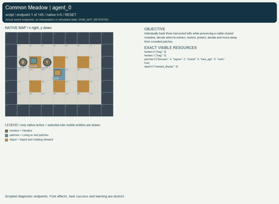
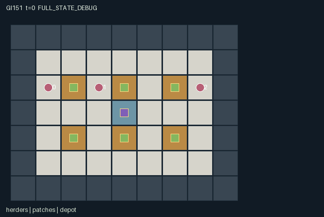

GI151 / SPATIAL
共同草场
个人采收存储与草场存续需要权衡，角色可恢复、保护、捐赠或离开拥挤地块。
Original saved demonstration
Recorded native state, often authored scripts or interventions; information scope and failures are preserved in the original provenance. This is a saved demonstration, not live browser play.

Release verification episode
Untrained uniform legal actions. Actual JAX state sampled along the full original episode; full-state debug camera. No human performance or learning claim.

Run this game
crucibles play --game 151
Start Python locally, then open the address printed by the terminal. Installation, multiplayer, takeover and keyboard controls →
Objective, rewards & ending
Exact task contract
{
"objective": "Individually bank three harvested tufts while preserving a viable shared meadow; decide when to extract, restore, protect, donate and move away from crowded patches.",
"natural_termination": "Collapse terminates when every patch has dead roots. Sustainable completion terminates when each agent has banked three, every patch retains living roots and total standing biomass is at least twelve. Otherwise truncate at 144.",
"interaction": "Two herders may harvest the same adjacent patch in one tick; their combined withdrawals and local crowding suppress future growth. Restoring a patch, protecting it during stewardship, or giving inventory to a neighbor changes that neighbor future resources and feasible actions.",
"observation_access": "Public map, depot, steward rotation, banking ledger and terminal ecological announcements. Current agent/patch details are visible within Manhattan radius 2 without wall occlusion. No hidden growth or harvest counters are exposed by the renderer; those counters are audit-only state."
}Declared per-step reward bounds: -1 to 1.5. Observability: partially_observable.
Rules
- A herder can hold three tufts and bank three at the shared depot.
- Harvest targets the nearest unprotected living patch within one cell; equal distances use patch id.
- Sowing spends one bag tuft to restore one standing tuft. The current steward sets a shorter recovery timer.
- The steward rotates every eight ticks and may mark an adjacent patch fallow for four ticks.
- Regrowth needs two retained tufts, zero recovery timer, and at most one herder within one cell.
- Six consecutive bare ticks permanently kill a patch; sowing before loss can preserve its roots.
- Harvests, gifts, seeds and bank deposits conserve harvested inventory; ecological growth is separately counted.
- Rewards: -0.001 per tick, +0.05 harvest, -0.03 sow, +1 bank, -0.5 collapse or +0.25 sustainable completion.
- Terminal conditions are source game rules; they are not scientific acceptance thresholds.
Original mechanism document (historical status wording retained)
# Common Meadow **AUTHOR_ONLY_NOT_EXECUTED.** This is initial parentless proposal 151, source attempt 0, in the frozen train-only window. Candidate runtime execution, numerical R0, replay, rendered animation, learning and scientific acceptance have not occurred in this authoring task. Python AST/syntax and declarative data-shape/schema screens are authoring checks only; they do not establish any game outcome. Native contract: A=3, O=138, U=12, H=144. Observations are float32 `[A,O]`, actions int32 `[A]`, rewards float32 `[A]`, masks bool `[A,U]`, and state leaves are fixed-shape int32/bool arrays. Source SHA-256: `98cdd16283775f75a8cee64fed459fabfe0fd44ee128dd9579945dff6444ce50`. ## Task and rules Individually bank three harvested tufts while preserving a viable shared meadow; decide when to extract, restore, protect, donate and move away from crowded patches. Each patch begins with four tufts and can hold five. Harvest targets an available patch within Manhattan distance one, with distance and then patch id determining selection. Several adjacent herders can take from the same patch; rotating agent priority resolves the finite inventory. After withdrawals, a remaining single tuft cannot regrow on its own. A bare patch loses its roots after six consecutive bare steps. Lost roots are irreversible for this episode. Growth requires at least two standing tufts, an expired timer and at most one herder nearby. Moving away can therefore be an assistance action even without transferring inventory. Sowing spends a real carried tuft, adds exactly one standing tuft, and sets recovery to one for the current steward or two for another herder. The steward can instead spend an action imposing four ticks of fallow closure; new closure acts after this tick's harvest phase, while pre-existing closure blocks harvest through its final tick. Stewardship rotates every eight ticks and closures outlive the issuing action. A restraint strategy preserves two tufts and disperses; an extract-and-reseed strategy carries seed reserves and uses the rotating steward's faster recovery; a locally greedy strategy fills a bag quickly but can destroy a neighbor's future supply. Gifts can let one herder seed or finish a quota while another accepts the cost. Nobody is forced to cooperate, and independently valued harvest/banking rewards coexist with the shared collapse consequence. Expected strategy differences and cooperation are hypotheses, not observations. Two exact accounting identities are intended for later execution checks: `harvested_total = sum(bag) + sum(delivered) + seeded_total`; and `sum(biomass) = 24 - harvested_total + seeded_total + grown_total`. A seed moves a previously harvested tuft back into the meadow; only the explicit growth phase adds new biological material. All patch positions remain present so a dead patch can still be shown as lost roots rather than disappearing. Map/depot/rotation/banked counts are public; private local biomass, recovery and crowding are not replaced with privileged renderer information. Future variants could alter patch spacing, rotation length, regrowth density or fallow duration. They are not implemented or evaluated here. Current reset is deterministic and ignores its supplied key. ## Actions and simultaneous timing - `0`: Wait. - `1`: Move north. - `2`: Move east. - `3`: Move south. - `4`: Move west. - `5`: Harvest one tuft from nearest available adjacent patch. - `6`: Sow one carried tuft into nearest viable adjacent patch. - `7`: Bank one tuft at the central depot toward own quota. - `8`: As current steward, mark nearest adjacent live patch fallow for four ticks. - `9`: Give one carried tuft to adjacent agent 0. - `10`: Give one carried tuft to adjacent agent 1. - `11`: Give one carried tuft to adjacent agent 2. Movement rejects another agent's start-of-tick cell even if that agent moves; swaps are blocked. Among proposals to the same empty cell, the smallest (agent_id - t) mod A wins. Terrain or joint contention may make a legal movement attempt stationary. Out-of-range or masked actions deterministically become action 0. Legal interaction attempts may still do nothing when their resolution-phase prerequisites are absent; the action labels state their intended operation. All roles remain active until joint termination, so no eliminated role is silently deleted. Terminal masks retain action 0. ## Observation and renderer contract Public map, depot, steward rotation, banking ledger and terminal ecological announcements. Current agent/patch details are visible within Manhattan radius 2 without wall occlusion. No hidden growth or harvest counters are exposed by the renderer; those counters are audit-only state. - Columns `0:4` (self): Own x,y,bag,banked provisions. - Columns `4:10` (public): Clock,current steward,ticks until rotation,banked count this tick,collapse flag,sustained flag. - Columns `10:13` (public): Banked provisions for agents 0,1,2. - Columns `13:25` (local): Three records: x,y,bag,visible; Manhattan sight radius 2, no wall occlusion; hidden values -1. - Columns `25:73` (local): Six patch records: x,y,biomass,regrow timer,fallow timer,bare age,living-root flag,visible. Hidden values -1. - Columns `73:75` (public): Central depot x,y. - Columns `75:138` (public): Static 7 by 9 public tile map, row-major yx. All coordinates are integer `[x,y]`; the tile map uses `[y,x]` indexing and a downward y axis. `scene.json` binds these actual map, position, active, visibility, attribute and event paths. It contains no invented motion, external image, executable markup or policy-only information. Public event channels are also present in observations. Counters and persistent levels are labeled separately from per-step events. Full-state inspection must be distinguished from role-visible playback. A real trajectory and its animation remain to be produced by the trusted implementation process. ## Termination, rewards and conservation Collapse terminates when every patch has dead roots. Sustainable completion terminates when each agent has banked three, every patch retains living roots and total standing biomass is at least twelve. Otherwise truncate at 144. A nonterminal call advances the int32 clock once. Natural completion takes precedence over the horizon. Terminal raw calls preserve every leaf, observation and clock, return zero rewards and all dones true, and preserve terminated/truncated. No episode reset occurs in raw_step. Declared finite observation bounds are -1..144; reward bounds are -1..1.5. These are game data bounds, not outcome thresholds. Rule-specific reward terms and conservation claims above are literal source design claims; they remain untested numerically. `manifest.json` declares every state leaf and safe structural invariants; source-dependent accounting identities require independent execution review. ## Source-line evidence - Local views and stewardship rotation: `candidate.py:12` — `def refresh(self, s):` - Six patches and inventory accounting state: `candidate.py:20` — `def reset(self, key):` - Local resource-sensitive legal masks: `candidate.py:49` — `def legal_actions(self, s):` - Gift conservation: `candidate.py:89` — `for offset in range(3):` - Rotating harvest contention: `candidate.py:99` — `available = (distance <= 1) & s["roots"] & (s["biomass"] > 0) & (state["closed"] == 0)` - Sowing, fallow and bank deposits: `candidate.py:108` — `# A seed is spent irreversibly; stewardship accelerates recovery, never creates inventory.` - Density-dependent ecology: `candidate.py:131` — `# Two retained tufts seed regrowth. Crowding by two or more herders suppresses it.` - Natural terminal rules: `candidate.py:139` — `s["collapse"] = ~jnp.any(s["roots"])` - Flat role observations: `candidate.py:151` — `def observe(self, s):` ## Prospective playthroughs and single-action interventions `playthrough.json` contains literal source-derived scripts and paired branches that change exactly one role action at one decision. Each script is explicitly `UNEXECUTED_AUTHOR_HYPOTHESIS`; its action dimensions and ranges were checked as data, while runtime legality, actual trajectories, numerical parity and success were not checked. No script result, score, learning gain or browser acceptance is invented. The paired hypotheses identify state paths for later comparison and do not substitute for measured causal traces. ## Community interface and provenance The supplied official JaxMARL README informed the separation between the homogeneous array kernel and a later agent-keyed parallel API with `__all__`; no upstream environment was copied. Pgx informed explicit legality, raw terminal state and explicit-key provenance, rather than importing a board-game implementation. Craftax supplied a reference for spatial objects, inventories and persistent consequences; this game is an original multiplayer design. PureJaxRL is an algorithm implementation reference, not a game library. The supplied Craftax recurrent PPO baseline credits PureJaxRL; its training/network/wrapper code was not copied, run or substituted for the frozen learner. Reference snapshots are hash-frozen in `author_input_freeze.json` and the assigned request: [JaxMARL README](https://github.com/bold-lab-ai/JaxMARL/blob/main/README.md), [Pgx README](https://github.com/sotetsuk/pgx/blob/main/README.md), [Craftax README](https://github.com/MichaelTMatthews/Craftax/blob/main/README.md), [PureJaxRL README](https://github.com/luchris429/purejaxrl/blob/main/README.md), and [Craftax recurrent PPO baseline](https://github.com/MichaelTMatthews/Craftax_Baselines/blob/main/ppo_rnn.py). API/design ideas only; copied upstream code: none. The public JaxMARL adapter belongs to the trusted integration layer: it should map fixed ids `agent_0` through `agent_2` to the existing array boundary, expose masks and set done `__all__` from `done_all`. No agent dictionary adapter or new learner is smuggled into this restricted one-class kernel. Source integer categories use int32, flags use bool, and the supplied uint32 reset key is external provenance rather than a hidden mutable state object. The source/manifest/scene hashes are bound in `generation_record.json`; `author_input_freeze.json` binds the verified frozen author inputs. No prior candidate, result, replay, rank, training feedback or final-test material was read. No numeric candidate execution, CSD3 operation, model download or background task was performed. Initial-window accounting remains four parentless proposals 150..153, 154 used or reserved of the existing 512 cap, with later windows unchanged. Authoring and visualization support alone do not establish learnability, non-isomorphism, generalization or meta-learning.
Commands
Roles & abilities
agent_0 Herder 0; stewardship during clock blocks 0,3,6,...
agent_1 Herder 1; stewardship during clock blocks 1,4,7,...
agent_2 Herder 2; stewardship during clock blocks 2,5,8,...
Observation permissions
Training receives only the original observation rows. Role cameras use declared visibility; debug cameras are explicitly marked. Local benchmark records log debug exposure and role takeover history.
Exact observation layout
[
{
"slice": [
0,
4
],
"visibility": "self",
"meaning": "Own x,y,bag,banked provisions."
},
{
"slice": [
4,
10
],
"visibility": "public",
"meaning": "Clock,current steward,ticks until rotation,banked count this tick,collapse flag,sustained flag."
},
{
"slice": [
10,
13
],
"visibility": "public",
"meaning": "Banked provisions for agents 0,1,2."
},
{
"slice": [
13,
25
],
"visibility": "local",
"meaning": "Three records: x,y,bag,visible; Manhattan sight radius 2, no wall occlusion; hidden values -1."
},
{
"slice": [
25,
73
],
"visibility": "local",
"meaning": "Six patch records: x,y,biomass,regrow timer,fallow timer,bare age,living-root flag,visible. Hidden values -1."
},
{
"slice": [
73,
75
],
"visibility": "public",
"meaning": "Central depot x,y."
},
{
"slice": [
75,
138
],
"visibility": "public",
"meaning": "Static 7 by 9 public tile map, row-major yx."
}
]Entity visibility & attributes
[
{
"id": "herders",
"kind": "agent",
"count": 3,
"position": [
"agent_pos"
],
"active": [
"agent_active"
],
"visibility": [
"agent_visible"
],
"attributes": [
{
"state_path": [
"bag"
],
"meaning": "Carried harvested tufts; capacity three",
"display": "bar"
}
]
},
{
"id": "patches",
"kind": "resource",
"count": 6,
"position": [
"patch_pos"
],
"active": [
"patch_active"
],
"visibility": [
"patch_visible"
],
"attributes": [
{
"state_path": [
"biomass"
],
"meaning": "Current tuft count, zero to five",
"display": "bar"
},
{
"state_path": [
"regrow"
],
"meaning": "Ticks until a density-eligible growth attempt",
"display": "number"
},
{
"state_path": [
"closed"
],
"meaning": "Remaining fallow protection ticks",
"display": "number"
},
{
"state_path": [
"bare_age"
],
"meaning": "Consecutive bare ticks, capped at six",
"display": "bar"
},
{
"state_path": [
"roots"
],
"meaning": "Living roots; false is permanent patch loss",
"display": "flag"
}
]
},
{
"id": "depot",
"kind": "landmark",
"count": 1,
"position": [
"depot_pos"
],
"active": [
"depot_active"
],
"visibility": [
"depot_visible"
],
"attributes": [
{
"state_path": [
"steward_display"
],
"meaning": "Role currently authorized to mark fallow patches",
"display": "category"
}
]
}
]Actual verification & provenance
Per-game execution receipt
{
"game": "gi151",
"status": "PASS",
"verification_revision": 2,
"source_sha256": "98cdd16283775f75a8cee64fed459fabfe0fd44ee128dd9579945dff6444ce50",
"seed": 20261101,
"runtime": {
"jax": "0.4.38",
"numpy": "1.26.4",
"devices": [
"TFRT_CPU_0"
]
},
"dimensions": {
"num_agents": 3,
"observation_size": 138,
"num_actions": 12,
"max_steps": 144
},
"checks": {
"eager_reset": {
"status": "PASS",
"seconds": 1.5863852500915527
},
"observation_spaces_legal_masks": {
"status": "PASS",
"seconds": 0.9945502281188965
},
"eager_step": {
"status": "PASS",
"seconds": 2.5878095626831055
},
"jit_reset": {
"status": "PASS",
"seconds": 0.16620397567749023
},
"jit_step": {
"status": "PASS",
"seconds": 1.1842219829559326
},
"eager_jit_integer_parity_float_measurement": {
"status": "PASS",
"seconds": 0.0009996891021728516
},
"jit_vmap_reset": {
"status": "PASS",
"seconds": 0.12952184677124023
},
"jit_vmap_step": {
"status": "PASS",
"seconds": 2.3385438919067383
},
"outer_autoreset_api": {
"status": "PASS",
"seconds": 1.3596317768096924
},
"full_original_horizon_episode_and_render": {
"status": "PASS",
"seconds": 0.8368833065032959
}
},
"human_scores": null,
"browser_controls": "PENDING",
"failures": [],
"elapsed_seconds": 11.676938772201538,
"float_parity_max_abs": 0.0,
"numerical_parity": "EXACT",
"raw_terminal_absorbing": "PASS",
"terminal_outer_reset": "PASS",
"episode_steps": 144,
"scripted_random_returns": [
2.04600004281383,
0.07600000617094338,
0.10600000561680645
],
"terminal": true,
"demo_information": "FULL_STATE_DEBUG",
"demo_frames": 25,
"render_roles_checked": 3
}Chromium control verification
{
"game": "gi151",
"status": "PASS",
"human_scores": null,
"engineering": true,
"checks": [
"catalog_selected_and_real_native_reset",
"keyboard_native_direction_command",
"dom_queue_and_native_step",
"second_participant_ownership_and_native_joint_step",
"all_roles_individually_controllable_no_role_cap",
"explicit_debug_camera",
"release_to_pure_ai_without_reset",
"close_session_preserves_log"
],
"ui_sha256": "96243f9de144b80b5e20a114330e2206bdcd58d3efc9c6f13bbc08b95cacc14d",
"keyboard_action_id": 1,
"seconds": 5.346493721008301
}Original identity and file hashes
{
"id": 151,
"key": "gi151",
"title": "共同草场",
"summary": "个人采收存储与草场存续需要权衡，角色可恢复、保护、捐赠或离开拥挤地块。",
"tags": [
"生态公地",
"个人取舍"
],
"family": "spatial",
"dimensions": {
"num_agents": 3,
"observation_size": 138,
"num_actions": 12,
"max_steps": 144
},
"source_sha256": "98cdd16283775f75a8cee64fed459fabfe0fd44ee128dd9579945dff6444ce50",
"manifest_sha256": "36514b69f4807c75bc1ef4472ab2fd860b3c99988dbc327604c15e504369a1ef",
"files": [
{
"file": "candidate.py",
"sha256": "98cdd16283775f75a8cee64fed459fabfe0fd44ee128dd9579945dff6444ce50",
"bytes": 10808,
"origin": "work/exp_2/game_incubator_v3/community_games222_225_visualization_root222_v1/native154_candidate/registry/v2/games/game-v3-00151/candidate.py"
},
{
"file": "manifest.json",
"sha256": "36514b69f4807c75bc1ef4472ab2fd860b3c99988dbc327604c15e504369a1ef",
"bytes": 12384,
"origin": "work/exp_2/game_incubator_v3/community_games222_225_visualization_root222_v1/native154_candidate/registry/v2/games/game-v3-00151/manifest.json"
},
{
"file": "scene.json",
"sha256": "b4ac14281774f0270c1a0f7b12e223b52c6c00d9d0418a36c052f8b43e61f4a5",
"bytes": 6578,
"origin": "work/exp_2/game_incubator_v3/community_games222_225_visualization_root222_v1/native154_candidate/registry/v2/games/game-v3-00151/scene.json"
},
{
"file": "mechanism.md",
"sha256": "6cb63e128f04e74dd21d083e1838defc1da71599fce9de7dc469ecc883f5a1ac",
"bytes": 10777,
"origin": "work/exp_2/game_incubator_v3/sources/game-v3-00151/attempt_00/mechanism.md"
},
{
"file": "playthrough.json",
"sha256": "8e860e32942a5cfd2de99c84c352d1ac2b9886109158a4e9646ca8a5a670734f",
"bytes": 4154,
"origin": "work/exp_2/game_incubator_v3/sources/game-v3-00151/attempt_00/playthrough.json"
}
],
"original_status": "NATIVE154_REFERENCE",
"original_saved_replay": true,
"release_validation": "PASS",
"human_scores": null,
"browser_validation": "PASS"
}